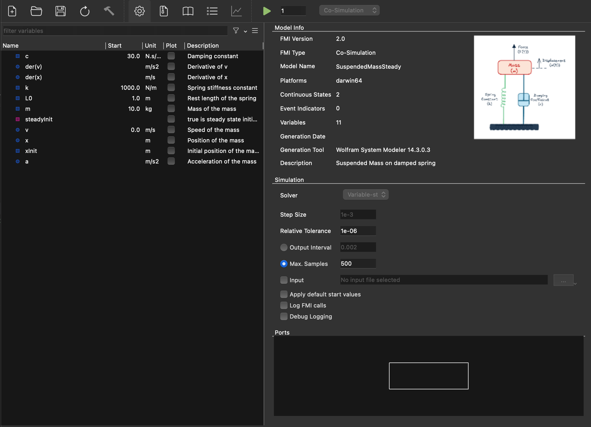
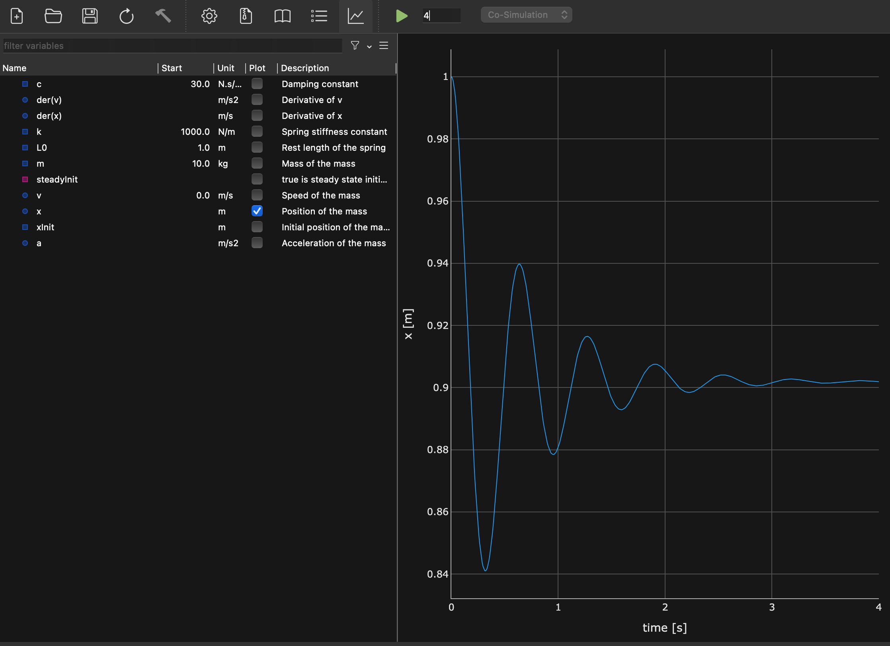

Functional Mock-up Interface · Co-Simulation · Model Exchange
FMI 3.0 FMPy (Python) Intermediate Level 🔗 Run the examples yourselfLearn more about FMI 3.0 and FMPy in the Learn Modelica & FMI newsletter on LinkedIn or visit the dedicated website.
The Functional Mock-up Interface (FMI) is an open standard for exchanging simulation models as Functional Mock-up Units (FMUs). An FMU is a zip file containing a model description (XML) and compiled binaries (or C source) that any FMI-compatible tool can import and simulate.
| Feature | FMI 2.0 | FMI 3.0 |
|---|---|---|
| Interface types | Co-Simulation, Model Exchange | + Scheduled Execution (limited tool support — see footnote*) |
| Data types | Real, Integer, Boolean, String, Enumeration | + NEW Float32, Int8/16/(32)/64, UInt8/16/32/64, Binary, Clock |
| Array variables | ❌ Not supported | ✅ First-class support for arrays |
| Clocks | ❌ | ✅ Synchronous clocks for CS and ME (hybrid co-simulation) |
| Terminals & icons | Backported to FMI 2.0.x | ✅ Structured grouping of variables into bus-like terminals |
| Layered standards | Backported to FMI 2.0.x | ✅ Extensibility via layered standard concept |
| Build configuration | Back ported to FMI 2.0.4 | ✅ Source code FMUs with build instructions |
| Early return (CS) | 🟠 Limited support | ✅ FMU can return before communication step ends |
| Intermediate update (CS) | ❌ | ✅ FMU can report intermediate values during a step |
| Event handling (CS) | ❌ | ✅ Explicit event mode in CS (not just ME) |
| Adjoint derivatives | ❌ (only directional) | NEW Adjoint derivatives for optimization / sensitivity analysis |
| Variable naming | <ScalarVariable> | Type-specific: <Float64>, <Int32>, <Binary>, etc. |
| Model description | fmiVersion="2.0" | fmiVersion="3.0" |
The FMU contains its own solver. A master algorithm just tells it "advance by Δt" and reads outputs. Simplest to use — ideal for coupling models from different tools.
The FMU provides equations only (derivatives, event indicators). An external solver integrates the ODEs. More control, potentially more accurate — but the importing tool must provide a suitable solver.
FMI 3.0 also defines a Scheduled Execution interface for clock-driven, real-time systems (HiL, RTOS). However, there is practically no tool support for SE at this time, including FMPy. For most use cases — including SiL, vECU testing, and multi-rate systems — CS FMUs with clocks (hybrid co-simulation) are the recommended approach. SE is therefore omitted from this cheatsheet.
Note: Clocks in CS/ME (synchronous clocks, similar to Modelica clocks) are different from the partition-based clocks in SE.
Key rule: You can only call certain FMI functions in certain states.
For example, you can only set parameters in Configuration Mode or Initialization Mode,
and you can only call fmi3DoStep in Step Mode (CS).
FMPy handles state transitions automatically when you use its high-level simulate_fmu() function.
An FMU is a zip file (renamed to .fmu) with a standardized internal layout:
FMI 3.0 uses consistent platform tuples: {arch}-{os} (e.g., x86_64-linux, aarch64-darwin).
FMI 2.0 used different names (linux64, darwin64). An FMU only works on platforms for which it has binaries (or sources).
<fmiModelDescription
fmiVersion="3.0"
modelName="HeatExchanger"
instantiationToken="{8c4e810f-...}" <!-- was 'guid' in FMI 2.0 -->
description="Counter-flow heat exchanger model"
generationTool="MyTool 4.2">
<CoSimulation modelIdentifier="HeatExchanger"
canHandleVariableCommunicationStepSize="true"
canReturnEarlyAfterIntermediateUpdate="true" /> <!-- capabilities -->
<!-- and/or: <ModelExchange .../>, <ScheduledExecution .../> --><ModelVariables>
<Float64 name="T_inlet" valueReference="1"
causality="input" start="293.15"
description="Inlet temperature [K]" />
<Float64 name="T_outlet" valueReference="2"
causality="output"
description="Outlet temperature [K]" />
<Float64 name="k" valueReference="3"
causality="parameter" variability="fixed"
start="500.0" description="Heat transfer coeff [W/(m²K)]" />
<!-- FMI 3.0: Array variable -->
<Float64 name="T_profile" valueReference="10"
causality="output">
<Dimension start="20" /> <!-- array of 20 elements -->
</Float64>
<!-- FMI 3.0: Clock variable -->
<Clock name="samplingClock" valueReference="100"
causality="input" intervalVariability="fixed"
intervalDecimal="0.01" />
</ModelVariables>| Causality | Meaning | Allowed Variability |
|---|---|---|
parameter | Set before simulation, constant during run | fixed, tunable |
calculatedParameter | Computed from parameters only during init for fixed and re-computed during simulation when tunable | fixed, tunable |
input | Set by the environment (master) during simulation | discrete, continuous |
output | Computed by the FMU, readable by the environment | constant, discrete, continuous |
local | Internal variable, not for external use | any |
independent | The independent variable (usually time) | continuous |
structuralParameter | 3.0 Affects model structure (e.g., array sizes) | fixed, tunable |
from fmpy import read_model_description, dump
# Quick summary of FMU contents
dump('HeatExchanger.fmu')
# Detailed programmatic access
md = read_model_description('HeatExchanger.fmu')
print(f"Model: {md.modelName}, FMI: {md.fmiVersion}")
print(f"GUID: {md.guid}")
print(f"CS: {md.coSimulation is not None}")
print(f"ME: {md.modelExchange is not None}")
# List all variables
for var in md.modelVariables:
print(f" {var.name:30s} causality={var.causality:20s} start={var.start}")
# Filter inputs and outputs
inputs = [v for v in md.modelVariables if v.causality == 'input']
outputs = [v for v in md.modelVariables if v.causality == 'output']
params = [v for v in md.modelVariables if v.causality == 'parameter']In Co-Simulation, the FMU contains its own ODE/DAE solver. The master algorithm:
stepSizetEndfrom fmpy import simulate_fmu
from fmpy.util import plot_result
# Simplest possible simulation
result = simulate_fmu(
'HeatExchanger.fmu',
stop_time=10.0,
output_interval=0.01
)
plot_result(result)
# With parameters and input signals
result = simulate_fmu(
'HeatExchanger.fmu',
stop_time=100.0,
step_size=0.1, # communication step size
output_interval=0.1, # output recording interval
start_values={
'k': 750.0, # parameter override
'T_inlet': 350.0, # initial input value
},
output=['T_outlet', 'Q_flow'], # variables to record
)
# Access results (structured NumPy array)
time = result['time']
T_out = result['T_outlet']import numpy as np
# Option 1: NumPy structured array
dtype = np.dtype([('time', np.float64), ('T_inlet', np.float64)])
input_signals = np.array([
(0.0, 293.15),
(10.0, 293.15),
(10.0, 350.00), # step change at t=10
(50.0, 350.00),
(50.0, 320.00), # step change at t=50
(100.0, 320.00),
], dtype=dtype)
result = simulate_fmu(
'HeatExchanger.fmu',
stop_time=100.0,
input=input_signals, # FMPy interpolates between points
output=['T_outlet'],
)
# Option 2: Read from CSV file
from fmpy.util import read_csv
input_signals = read_csv('inputs.csv') # columns: time, T_inlet, ...from fmpy import read_model_description, extract
from fmpy.fmi3 import FMU3Slave
md = read_model_description('HeatExchanger.fmu')
unzipdir = extract('HeatExchanger.fmu')
fmu = FMU3Slave(
instanceName='instance1',
unzipDirectory=unzipdir,
modelIdentifier=md.coSimulation.modelIdentifier,
)
# Lifecycle: Instantiate → Configure → Initialize → Step → Terminate → Free
fmu.instantiate()
fmu.enterInitializationMode()
fmu.setFloat64([3], [750.0]) # set parameter k (valueReference=3)
fmu.exitInitializationMode()
# Simulation loop
time, step_size = 0.0, 0.1
while time < 10.0:
fmu.setFloat64([1], [350.0]) # set input T_inlet
fmu.doStep(
currentCommunicationPoint=time,
communicationStepSize=step_size
)
T_out = fmu.getFloat64([2]) # get output T_outlet
print(f"t={time:.1f} T_out={T_out[0]:.2f}")
time += step_size
fmu.terminate()
fmu.freeInstance()The FMU can return from doStep before the full step is completed (e.g., because an event occurred).
The master reads the actual time reached and adjusts.
Capability flag: canReturnEarlyAfterIntermediateUpdate
During doStep, the FMU can call back to the master to report intermediate values or request input updates.
Enables tighter coupling without reducing the communication step.
Capability flag: providesIntermediateUpdate
In FMI 3.0, CS FMUs can enter Event Mode (via fmi3EnterEventMode) to handle discrete events during simulation —
triggered by early return or when eventHandlingNeeded is set after doStep.
FMI 3.0 introduces synchronous clocks for CS, enabling hybrid co-simulation with discrete-time and multi-rate behavior — without needing Scheduled Execution.
canHandleVariableCommunicationStepSize, adapt step size to dynamics.eventHandlingNeeded after doStep and enter Event Mode if true.The FMU provides the model equations — derivatives, algebraic outputs, event indicators. An external ODE solver (provided by the master / tool) drives the integration.
| Aspect | CS Co-Simulation | ME Model Exchange |
|---|---|---|
| Solver | Suitable solver bundled with model | You provide it (or FMPy provides one) |
| Interface complexity | ⭐ Much simpler API | ⭐⭐⭐ More complex (states, events, derivatives) |
| Step size control | Communication points only | Full control (variable-step) |
| Accuracy | Limited by communication step | Solver-controlled (error-based) |
| Coupled simulation | Easy (each FMU is self-contained) | Requires combined state vector |
| Stiff systems | FMU's internal solver handles it | You must use an implicit solver |
| Ease of use | ⭐⭐⭐ Simple | ⭐⭐ More complex |
| Best for | Tool coupling, black-box models | Custom integration, accuracy-critical |
from fmpy import simulate_fmu
# FMPy automatically uses CVode solver for ME
result = simulate_fmu(
'HeatExchanger.fmu',
fmi_type='ModelExchange', # default is 'CoSimulation'
stop_time=10.0,
output_interval=0.01,
solver='CVode', # CVode (default), Euler
start_values={'k': 750.0},
output=['T_outlet'],
)from fmpy.fmi3 import FMU3ModelExchange
# ... (instantiate, extract as before)
fmu = FMU3ModelExchange(...)
fmu.instantiate()
fmu.enterInitializationMode()
fmu.exitInitializationMode()
fmu.enterContinuousTimeMode()
# Get initial states
n_states = md.numberOfContinuousStates
n_events = md.numberOfEventIndicators
x = fmu.getContinuousStates()
# Simple forward Euler (for illustration — use CVode in practice!)
time, dt = 0.0, 1e-3
while time < 10.0:
fmu.setTime(time)
fmu.setContinuousStates(x)
# Check for events
event_indicators = fmu.getEventIndicators()
# Get derivatives: dx/dt = f(x, u, t)
dx = fmu.getDerivatives()
# Euler step
x = [x[i] + dt * dx[i] for i in range(n_states)]
time += dt
fmu.terminate()
fmu.freeInstance()In Model Exchange, you must handle state events (zero-crossings of event indicators) and time events
(reported by getNextEventTime). When an event occurs:
fmu.enterEventMode()fmu.updateDiscreteStates() until newDiscreteStatesNeeded = falsefmu.enterContinuousTimeMode()x = fmu.getContinuousStates()FMPy's simulate_fmu() handles all of this automatically.
# Install FMPy as tool
uv tool install fmpy[complete]
# In virtual environment
# Minimal dependencies install of FMPy
uv add fmpy
# With optional dependencies (plotting, GUI)
uv add fmpy[complete]
# Verify installation
python -c "import fmpy; print(fmpy.__version__)"
# Command-line tools
fmpy --help
fmpy info HeatExchanger.fmu # dump model description
fmpy validate HeatExchanger.fmu # check FMU compliance
fmpy simulate HeatExchanger.fmu # run from command line
fmpy gui # launch graphical interface| Function | Purpose | Returns |
|---|---|---|
fmpy.dump(fmu_path) | Print FMU summary to console | None (prints) |
fmpy.read_model_description(fmu_path) | Parse modelDescription.xml | ModelDescription object |
fmpy.simulate_fmu(fmu_path, ...) | High-level simulation (CS or ME) | NumPy structured array |
fmpy.extract(fmu_path) | Extract FMU zip to temp dir | Path to extracted directory |
fmpy.instantiate_fmu(unzipdir, md, fmi_type) | Create FMU instance for low-level API | FMU instance object |
fmpy.util.plot_result(result) | Plot simulation results | Plotly figure |
fmpy.util.read_csv(path) | Read input signal CSV | NumPy structured array |
fmpy.util.write_csv(path, result) | Write results to CSV | None |
fmpy.validation.validate_fmu(fmu_path) | Validate FMU compliance | List of issues |
simulate_fmu() — Full Parameter Referenceresult = simulate_fmu(
filename, # path to .fmu file
fmi_type='CoSimulation', # 'CoSimulation' or 'ModelExchange'
start_time=0.0, # simulation start time
stop_time=1.0, # simulation end time
step_size=None, # CS communication step (None = auto)
output_interval=None, # recording interval (None = step_size)
solver='CVode', # ME solver: 'CVode' or 'Euler'
relative_tolerance=None, # solver tolerance (ME)
start_values={}, # dict: variable_name → value
input=None, # input signals (NumPy array or CSV path)
output=None, # list of variable names to record (None = all)
timeout=None, # max simulation time in seconds
fmu_instance=None, # re-use existing FMU instance
validate=True, # validate FMU before simulation
debug_logging=False, # enable FMU debug output
set_input_derivatives=False, # enable input interpolation (CS)
)import numpy as np
import matplotlib.pyplot as plt
from fmpy import simulate_fmu
# Parameter sweep over heat transfer coefficient
k_values = [100, 500, 1000, 2000, 5000]
results = {}
for k in k_values:
results[k] = simulate_fmu(
'HeatExchanger.fmu',
stop_time=60.0,
start_values={'k': k},
output=['T_outlet'],
)
# Plot comparison
fig, ax = plt.subplots()
for k, r in results.items():
ax.plot(r['time'], r['T_outlet'], label=f'k={k}')
ax.legend(); ax.set_xlabel('Time [s]'); ax.set_ylabel('T_outlet [K]')
plt.show()from fmpy.util import write_csv, read_csv
import pandas as pd
# Save to CSV
write_csv('results.csv', result)
# Or convert to pandas DataFrame for analysis
df = pd.DataFrame(result)
df.to_csv('results.csv', index=False)
# Load back
df = pd.read_csv('results.csv')FMPy includes a Qt-based GUI for interactive FMU exploration:
You can inspect variables, configure a run, and view the resulting plot in one place.
fmpy gui — launch empty GUI, open FMU via File menufmpy gui HeatExchanger.fmu — open specific FMU directlypip install fmpy[complete] (installs PyQt)

FMPy supports containers — packaging multiple FMUs into a single composite FMU. This allows you to:
.fmu fileCreate a container FMU via the FMPy GUI or programmatically.
See fmpy.container module and FMPy documentation for details.
binaries/)fmpy validate model.fmu — reports structural issuesldd / otool -L / Dependency Walker)start values via start_values={...}simulate_fmu(..., debug_logging=True)step_size=1e-4 (CS) or tighten relative_tolerance (ME)set_input_derivatives=True for smoother interpolationoutput=['var1', 'var2'] instead of recording everythingoutput_interval=0.1 (less disk I/O)fmu_instance= parameterx86_64-linux, x86_64-windows, aarch64-darwin (Apple Silicon)fmpy compile model.fmu/, not \| Error | Cause | Fix |
|---|---|---|
"No binary for platform..." |
FMU lacks binary for your OS/architecture | Request FMU with correct platform; or use source-code FMU and compile |
"fmi3EnterInitializationMode failed" |
Missing required start values or invalid parameter ranges | Set all inputs/parameters via start_values; check valid ranges |
"fmi3DoStep returned Error" |
Internal solver failure during step | Reduce step size; check input continuity; enable debug logging |
"fmi3DoStep returned Discard" |
FMU rejected the step (e.g., step too large) | Reduce step size; handle early return; retry with smaller step |
"Illegal call sequence" |
API function called in wrong state (e.g., doStep before init) |
Follow correct lifecycle: instantiate → configure → init → step → terminate |
"Cannot set variable in this mode" |
Trying to set a parameter after initialization | Set parameters before exitInitializationMode(); tunable params only in Event Mode |
"Unsupported FMI version" |
Tool/library doesn't support the FMU's FMI version | Update FMPy (pip install --upgrade fmpy); check FMI version compatibility |
ImportError: DLL load failed |
Missing C runtime or dependency DLLs | Install Visual C++ Redistributable (Windows); check ldd output (Linux) |
fmpy validatestart_values for all parameters — don't rely on defaultsdump() to understand an unfamiliar FMU before simulatingrequirements.txt for reproducibilityDiscard return status from doStep — it means the step failedvalueReference numbers — look them up from model descriptionterminate() and freeInstance() in low-level API| Function | CS | ME | Purpose |
|---|---|---|---|
fmi3InstantiateCoSimulation | ✅ | Create CS instance | |
fmi3InstantiateModelExchange | ✅ | Create ME instance | |
fmi3EnterInitializationMode | ✅ | ✅ | Enter init mode (set params/inputs) |
fmi3ExitInitializationMode | ✅ | ✅ | Exit init mode → ready to simulate |
fmi3EnterEventMode | ✅ | ✅ | Handle events |
fmi3EnterContinuousTimeMode | ✅ | Resume continuous integration (ME) | |
fmi3EnterStepMode | ✅ | Resume stepping (CS, after event) | |
fmi3SetFloat64 / getFloat64 | ✅ | ✅ | Set/get variable values |
fmi3DoStep | ✅ | Advance CS simulation by Δt | |
fmi3SetTime | ✅ | Set current time (ME) | |
fmi3SetContinuousStates | ✅ | Set state vector (ME) | |
fmi3GetContinuousStates | ✅ | Get state vector (ME) | |
fmi3GetDerivatives | ✅ | Get dx/dt (ME) | |
fmi3GetEventIndicators | ✅ | Get zero-crossing functions (ME) | |
fmi3UpdateDiscreteStates | ✅ | ✅ | Process events, update discrete vars |
fmi3GetClock / fmi3SetClock | ✅ | ✅ | Get/set clock states (hybrid co-sim) |
fmi3Terminate | ✅ | ✅ | End simulation |
fmi3FreeInstance | ✅ | ✅ | Release memory |
fmi3GetFMUState / fmi3SetFMUState | ✅ | ✅ | Save/restore FMU state (checkpoint) |
fmi3SerializeFMUState | ✅ | ✅ | Serialize state to byte array |
fmi3GetDirectionalDerivative | ✅ | ✅ | Partial derivatives (Jacobian elements) |
fmi3GetAdjointDerivative | ✅ | ✅ | 3.0 Adjoint derivatives (for optimization) |
| XML Element | C Type | Python (NumPy) | Notes |
|---|---|---|---|
<Float64> | fmi3Float64 | np.float64 | Main numeric type (was Real in FMI 2.0) |
<Float32> | fmi3Float32 | np.float32 | 3.0 Single precision |
<Int64> | fmi3Int64 | np.int64 | 3.0 |
<Int32> | fmi3Int32 | np.int32 | Was Integer in FMI 2.0 |
<Int16> / <Int8> | fmi3Int16 / fmi3Int8 | np.int16 / np.int8 | 3.0 |
<UInt64> ... <UInt8> | fmi3UInt* | np.uint* | 3.0 Unsigned variants |
<Boolean> | fmi3Boolean | np.bool_ | |
<String> | fmi3String | str | |
<Binary> | fmi3Binary | bytes | 3.0 Raw byte data |
<Enumeration> | fmi3Int64 | np.int64 | Maps to integer values |
<Clock> | fmi3Clock | np.bool_ | 3.0 Synchronous clocks |
| Status | Value | Meaning | Action |
|---|---|---|---|
fmi3OK | 0 | Success | Continue normally |
fmi3Warning | 1 | Success, but something is not ideal | Continue; check log for details |
fmi3Discard | 2 | Operation not fully completed (CS: step rejected) | Reduce step size; retry; check lastSuccessfulTime |
fmi3Error | 3 | Recoverable error | Can try to recover (e.g., reset); check log |
fmi3Fatal | 4 | Unrecoverable error — FMU is in invalid state | Must call freeInstance(); cannot continue |
| constant | fixed | tunable | discrete | continuous | |
|---|---|---|---|---|---|
| parameter | — | ✅ | ✅ | — | — |
| calculatedParameter | — | ✅ | ✅ | — | — |
| input | — | — | — | ✅ | ✅ |
| output | ✅ | — | — | ✅ | ✅ |
| local | ✅ | ✅ | ✅ | ✅ | ✅ |
| independent | — | — | — | — | ✅ |
| structuralParameter 3.0 | — | ✅ | ✅ | — | — |
| Command | Purpose | Example |
|---|---|---|
fmpy info <fmu> | Display model description summary | fmpy info Boiler.fmu |
fmpy validate <fmu> | Validate FMU compliance | fmpy validate Boiler.fmu |
fmpy simulate <fmu> | Simulate and plot results | fmpy simulate Boiler.fmu --stop-time 10 |
fmpy gui [fmu] | Launch graphical interface | fmpy gui Boiler.fmu |
fmpy compile <fmu> | Compile source-code FMU for current platform | fmpy compile Boiler.fmu |
fmpy create-cmake-project <fmu> | Generate CMake project from source FMU | fmpy create-cmake-project Boiler.fmu |
fmpy create-jupyter-notebook <fmu> | Generate Jupyter notebook for FMU | fmpy create-jupyter-notebook Boiler.fmu |
| Resource | URL |
|---|---|
| FMI Standard (official) | https://fmi-standard.org |
| FMI 3.0 Specification | https://fmi-standard.org/docs/3.0/ |
| FMPy Documentation | https://fmpy.readthedocs.io |
| FMPy GitHub | https://github.com/CATIA-Systems/FMPy |
| FMU validation helper | https://fmi-standard.org/validation/ |
| Reference FMUs (test models) | https://github.com/modelica/Reference-FMUs |
Dr. Clément Coïc
FMI 3.0 & FMPy Cheatsheet · Version 1.0 · April 2026
Covers: Co-Simulation · Model Exchange · FMPy Python API
Standard: FMI 3.0 · Tool: FMPy · Intermediate level
Scheduled Execution (SE) omitted — no practical tool support yet; use CS with clocks instead.
Print tip: Use Ctrl+P / Cmd+P → Save as PDF for offline reference